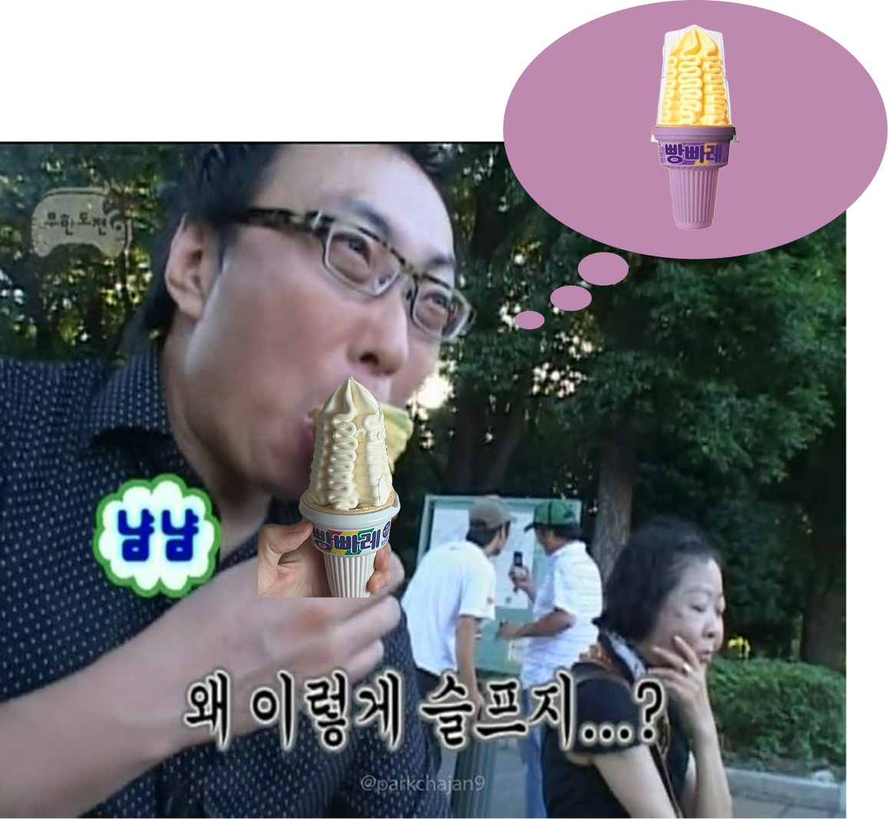

잠을 제대로 자지 못해 몸이 몹시 피곤한 상태였으나, .. . .
회의가 있었기에 공릉으로 가야해서 피곤한 채로 집 밖을 나섰다.
그러다 마주한 아할 매장.
우리집 앞 버스정류장 앞에는 아이스크림 할인 매장이 있다.
그냥 달달한 게 먹고 싶다는 생각뿐이었다.
매장에 도착해 뭐먹지 둘러보던 중,
라는 메뉴가 눈에 들어왔다. 평소같았으면 먹지도 않았을 꿀고구마맛.. 그날따라 끌렸다.
문제의 시작이었다. 저걸 먹겠다고 생각조차 하지 말았어야했다. 꿀고구마맛 빵빠레를 집고 키오스크 앞에 섰다.
-등록되지않은 상품입니다.-
순간 잘못 찍었나 싶었다.
-등록되지않은 상품입니다.-
잠을 못 잔 탓인지, 괜한 오기가 생겼다.
다른 꿀고구마맛 빵빠레를 집어왔다. 개별적으로 상품을 등록하지 않는다는 것쯤은 알고 있으나 꼭 찍어야만 할 거 같다는 생각이 내 머릿속을 떠다녔다.
매장에 있던 모든 꿀고구맛 빵빠레를 다 찍어봤으나 결과는 같았다.

결국 꿀고구맛 빵빠레는 포기했다.
그냥.. 하얗디 하얀 빵빠레를 집었다.
하얀 빵빠레를 집어들고 조용히 매장을 나와, 아무 일도 없었던 것처럼 회의에 가는 것.
그게 그날 내가 할 수 있는 유일한 일이었다.